La
photo de classe
(belle promo n'est-ce pas ?)
Cliquez
sur la tête d'un élève pour en savoir plus !  En attendant leur site et leur photo de classe, le trombinoscope des HX3 209 ici.
En attendant leur site et leur photo de classe, le trombinoscope des HX3 209 ici.
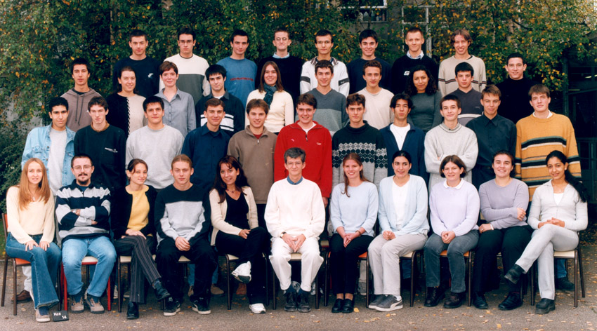
 | Nom : Bertrand Béguet | Surnom : Bébert |
| Né(e) le 3 juin 1982 | Lui écrire : bebert290593@aol.com | |
| Qualité(s) : supporter de l'OM, déteste le PSG
| Défaut(s) : passe les Mines | |
| Citation : "PARIS EST MAGIQUE ! " | ||
|
Remarque(s) : C'était vraiment très intéressant !! PSI. A intégré l'ENSAIS à Strasbourg (Concours e4a) | ||
| Nom : Elodie Boukobza | Surnom : | |
| Né(e) le 16 juillet 1982 | Lui écrire : elodie.boukobza@wanadoo.fr | |
| Qualité(s) :
| Défaut(s) : | |
| Citation : Commencer par le plus important, l'urgent peut attendre | ||
| Remarque(s) : PSI*. Magistère de physique à Orsay | ||
| 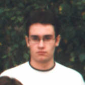 | Nom : Patrice Bourdaut | Surnom : Patou |
| Né(e) le 26 février 1982 | Lui écrire : hx3-208@caramail.com | |
| Qualité(s) : toutes
| Défaut(s) : tous | |
| Citation : "Tant qu'il y a de l'espoir, il y a de la vie" | ||
| Remarque(s) : 5/2 MP2 | ||
| 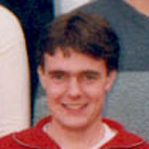 | Nom : Damien Chantemilant | Surnom : Mia© |
| Né(e) le 22 décembre 1982 | Lui écrire : pirateneo@caramail.com | |
| Qualité(s) : fait partie de la Sup3 team. J'adore le foot autant que les girafes. |
Défaut(s) : J'adore les girafes autant que le foot (lol). D'après ma carte de cantine, je suis en sup1. | |
|
Citation : "Je plains les gens petits : ils sont toujours les derniers à savoir quand il pleut". "Sup3, passe le fun autour de toi" | ||
|
Remarque(s) : bonne chance pour le site. Félicitations aux fondateurs (Morpheus et PTSK). Vive le Sup3 spirit ! MP2. Licence de maths à Orléans | ||
| 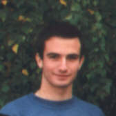 | Nom : Laurent Chapeau | Surnom : Krophète |
| Né(e) le 14 décembre 1982 | Lui écrire : laurent_chapeau@yahoo.fr | |
| Qualité(s) : fétard et grande gueule
| Défaut(s) : grande gueule et fétard | |
| Citation : "Une girafe de bière entamée par un Sup3 est une girafe finie..." | ||
|
Remarque(s) : Vive la Kro ! Vive le Sup3 spirit ! Une année exceptionnelle de bônne ambiance et de squattage de bars PSI*. A intégré l'ENAC fonctionnaire à Toulouse (Concours Communs Polytechniques) | ||
| Nom : Sylvain Chauveau | Surnom : | |
| Né(e) le 28 mars 1983 | Lui écrire : | |
| Qualité(s) : est un HX3 208
| Défaut(s) : fait une sale tronche sur la photo de classe | |
| Citation : "Capable du meilleur comme du pire, mais pour le pire, je suis le meilleur" FFF. Le meilleur du pire | ||
|
Remarque(s) : A jamais vivra le Sup3 spirit... A intégré les Mines d'Alès (Concours des Mines en Sup) | ||
| Nom : Simon | Surnom : S© | |
| Né(e) le 1er septembre 1982 | Lui écrire : slimeon@caramail.com | |
| Qualité(s) : gaucher
| Défaut(s) : une des incisives de la partie inférieure de ma bouche est de travers | |
| Citation : " I said once, the devil would have him about women" Henry V, II, 3, 30. "Bonjour Docteur, j'ai une gangrène purulente aiguë au gros orteil" Kid Paddle, Rodeo Blork | ||
|
Remarque(s) : je trouve que la Sup3 a vraiment de très bons délégués quand même. On pschitte les deux âmes charitables qui ont retroussé leurs manches pour faire ce site ! MP2. Licence de maths à Orléans | ||
| 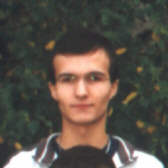 | Nom : Olivier Comas | Surnom : Morpheus |
| Né(e) le 8 septembre 1982 | Lui écrire : Morph208 at gmail | |
| Qualité(s) : franc et grande gueule
| Défaut(s) : grande gueule et franc | |
| Citation : "Juger est quelque fois un plaisir, comprendre en est toujours un" | ||
|
Remarque(s) : ne croyez pas tout ce qu'on vous raconte sur la prépa. On a passé tous ensemble une super année, et le Sup3 spirit demeurera à jamais... 5/2 MP2 | ||
| Nom : Samuel Coquelin | Surnom : Scoubi | |
| Né(e) le 6 juin 1982 | Lui écrire : | |
| Qualité(s) : bosseur
| Défaut(s) : se tue au travail | |
| Citation : | ||
| Remarque(s) : 5/2 MP* | ||
| 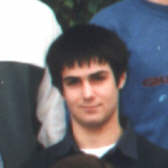 | Nom : Damien Coutadeur | Surnom : Coutcout Junior |
| Né(e) le 9 décembre 1982 | Lui écrire : damien.coutadeur@wanadoo.fr | |
| Qualité(s) : sportif, aime faire la fête
| Défaut(s) : j'écris mal (# euh... je confirme lol) | |
| Citation : "La liberté, c'est bien, la maîtrise c'est mieux" (en parlant des caleçons et des slips) | ||
| Remarque(s) : PSI. A intégré l' ENSEA à Cergy (Concours sur la Banque Centrale) | ||
| 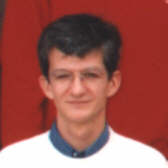 | Nom : Rémi Coutens | Surnom : |
| Né(e) le | Lui écrire : | |
| Qualité(s) : | Défaut(s) : | |
| Citation : | ||
| Remarque(s) : non ce n'est pas un élève, mais notre prof de maths ! | ||
| 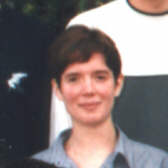 | Nom : Aude Cuzon | Surnom : poussinette |
| Né(e) le 16 juillet 1983 | Lui écrire : audecuzon@yahoo.fr | |
| Qualité(s) : gaie et vivante (mais pas gay)
| Défaut(s) : est toujours en retard (# et bourrée ? lol) | |
| Citation : "Plus on est de fous, plus on rit", "Rien ne sert de courir il faut partir à point" | ||
|
Remarque(s) : Les vides sont verres. Je vais bien tout va bien, je suis gaie tout me plaît. A intégré Sciences Politiques à Rennes | ||
| 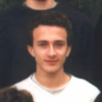 | Nom : Pierre-Yves Desnoues | Surnom : Pedro (à poil !!) |
| Né(e) le 6 septembre 1982 | Lui écrire : pedrohx3@caramail.com | |
| Qualité(s) : plein
| Défaut(s) : si peu | |
| Citation : On peut rire de tout, mais pas avec n'importe qui. | ||
|
Remarque(s) : a été élu Roi du Forum HX3 208 (et a été très content!). La prépa c'est bien, on y apprend beaucoup de jolies chansons... IUT Informatique à Orléans | ||
| Nom : Stéphane Diacre | Surnom : Stéph@no / BT Jack | |
| Né(e) le 9 novembre 1982 | Lui écrire : | |
|
Qualité(s) :
| Défaut(s) : | |
| Citation : Il est des circonstances où l'Homme, si circonspect soit-il, est astreint à des contreignances oniriques telles qu'en ce temps là, Jésus dit à Mathieu : "Descend de la voiture et regonfle le pneu !!! " | ||
|
Remarque(s) : A entrepris des recherches sur la culture du Ruthabaga à feuilles mauve en Patagonie Nord-Orientale, défenseur des nains de jardin, membre de la M.A.C.Q.B.T.L.B.P.Q.O.P.P.J.A.B.D.M.N.M.H (milice anti-caramail qui bouffe toute la bande passante qu'on peut plus jouer après bordel de merde non mais ho !) A intégré FIIFO (Formation d'Ingenieurs en Informatique de la Faculté d'Orsay) | ||
| 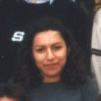 | Nom : Anissa Elfakir | Surnom : |
| Né(e) le 28 octobre 1982 | Lui écrire : | |
| Qualité(s) :
| Défaut(s) : | |
| Citation : | ||
| Remarque(s) : MP1. A intégré l'ENSAI à Rennes (Concours ENSAI) | ||
| Nom : Thibaut Fauconnier | Surnom : Tibô | |
| Né(e) le 21 février 1983 | Lui écrire : hitmen_hx3_208@caramail.com | |
| Qualité(s) : aime la Kro
| Défaut(s) : chante mal | |
| Citation : "Qui pisse au vent se rince les dents" | ||
|
Remarque(s) : Vive la fête... PSI*. A intégré Sup'Optique à Orsay (Concours Centrale) | ||
| 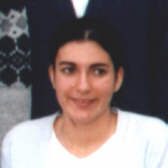 | Nom : Claire Garbit | Surnom : Joyeux lutin |
| Né(e) le 19 septembre 1982 | Lui écrire : joyeux.lutin2@caramail.com | |
| Qualité(s) : géniale
| Défaut(s) : trop modeste | |
| Citation : "Si j'avais su, j'aurais pas venu" | ||
| Remarque(s) : PSI*. A intégré l'ENAC à Toulouse (Concours Communs Polytechniques) | ||
| 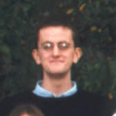 | Nom : Alain Gartioux | Surnom : Bordelom / Sergent / Jéronimo |
| Né(e) le 5 mars 1983 | Lui écrire : bordelom@caramail.com | |
| Qualité(s) : adore le sport, surtout le tennis. Adore l'OM !
| Défaut(s) : bordelique | |
| Citation : "L'abus d'école est dangereux pour la santé" | ||
|
Remarque(s) : Vive les HX3 208 et le Sup3 spirit ! Je suis pour un repas de la HX3 208 tous les 3 ans. MP1. Magistère de maths à Orsay | ||
| 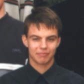 | Nom : Nyl Godard | Surnom : Nillou |
| Né(e) le 30 juillet 1982 | Lui écrire : godard.nyl@free.fr | |
|
Qualité(s) : n'aime pas la KRO
| Défaut(s) : n'aime pas les autres bières | |
| Citation : A la base, je suis démoralisé, ben voilà quoi ! | ||
|
Remarque(s) : Te vexe pas Krophète ! MP1. A intégré IIE à Evry (Concours Centrale) | ||
| 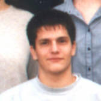 | Nom : Benoît Heinry | Surnom : |
| Né(e) le 14 février 1983 | Lui écrire : | |
|
Qualité(s) : j'aime bien glander
| Défaut(s) : j'aime bien glander | |
| Citation : | ||
| Remarque(s) : MP1. A intégré l'ENSEM à Nancy (Concours Communs Polytechniques) | ||
| 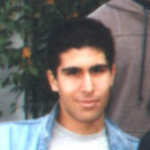 | Nom : Soufiane Jbara | Surnom : |
| Né(e) le 31 octobre 1982 | Lui écrire : | |
| Qualité(s) : toutes les qualités du monde
| Défaut(s) : tous les défauts du monde | |
| Citation : | ||
| Remarque(s) : ? | ||
| 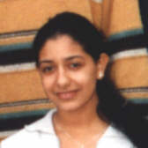 | Nom : Jihane Laaboudi | Surnom : Jiji |
| Né(e) le 12 février 1982 | Lui écrire : | |
|
Qualité(s) : aime les maths, dormir
| Défaut(s) : trop sérieuse | |
| Citation : | ||
| Remarque(s) : MP*. A intégré l'EIVP à Paris (Concours EIVP) | ||
 | Nom : Arnaud Lenoir | Surnom : DIEU (# hum hum...ça serait pas plutôt Dublack ? ) |
| Né(e) le 22 janvier 1983 | Lui écrire : c_moi8Op@caramail.com | |
| Qualité(s) : bonne frappe du gauche, bon crochet, va au contact
| Défaut(s) : mange lentement | |
| Citation : "Les déchets dans l'assiette s'il te plaît ! " Tout de suite "Hey, Arnaud ! On change ! " Tout de suite | ||
| Remarque(s) : MP2. A intégré l'ISIMA à Clermont Ferrand (Banque Concours Communs Polytechniques) | ||
| 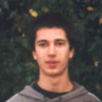 | Nom : Thomas Martin | Surnom : rien d'officiel |
| Né(e) le 3 mai 1982 | Lui écrire : | |
| Qualité(s) : avoir aucun défaut
| Défaut(s) : trop de qualités | |
| Citation : une bière, ça va, deux bières, ça va, trois bières, ça va, quatre bières ça va toujours, cinq bières, ça va, six bières, ça fait un pack | ||
| Remarque(s) : MP1. A intégré l'ENSEIRB à Bordeaux (Concours Communs Polytechniques) | ||
| 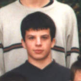 | Nom : Emilien Mollot | Surnom : MALAWI |
| Né(e) le 25 mars 1983 | Lui écrire : malawi-@caramail.com | |
| Qualité(s) : crossman, délégué suppléant de l'internat
| Défaut(s) : mauvais délégué suppléant de l'internat (en étant désigné c'est excusable) | |
| Citation : célèbre phrase de Confucius qui disait très justement : "Compromis, chose due" | ||
| Remarque(s) : MP1. A intégré l'ESTP à Paris (Concours ESTP) | ||
| 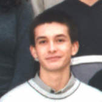 | Nom : Benoît Montagu | Surnom : PTSK |
| Né(e) le 20 février 1983 | Lui écrire : ptsk@caramail.com, bmontagu@free.fr | |
|
Qualité(s) : n. f. Manière d'être, bonne ou mauvaise, de qqch, état caractéristique : la qualité d'une étoffe, d'une terre. || Supériorité , excellence en qqch : préférer la qualité à la quantité. || Ce qui fait le mérite de qqn, aptitude : il a toutes les qualités. || Condition sociale, civile, juridique, etc. : qualité de citoyen, de maire, de légataire. || Es qualités, en tant qu'exerçant telle fonction. || Homme de qualité, homme de naissance noble (vx). || Qualité de la vie, tout ce qui contribue à créer des conditions de vie plus harmonieuses ; ces conditions elles-même. || En qualité de, comme, à titre de : en qualité de parent. | Défaut(s) : des vrais... | |
| Citation : "Si ton labeur est dur et que tes résultats sont minces, rappelle-toi qu'un jour aussi le grand chêne a été un gland comme toi." | ||
|
Remarque(s) : 5/2 MP*, poste au Ô Bural : Z ! | ||
| 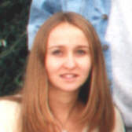 | Nom : Emmanuelle Mothiron | Surnom : Manue (original !) |
| Né(e) le 2 juin 1982 | Lui écrire : e_mothiron@hotmail.com | |
| Qualité(s) : n'est pas blonde !
| Défaut(s) : ressemble à une blonde... | |
|
Citation : "Parfois en séchant, le linge mouille les cordes" --> C 1 contre eux pet riz. En fait il y en a deux ! | ||
|
Remarque(s) : J'aurais bien quelques blablas à faire, mais : "Si ce que tu as à dire n'est pas plus beau que le silence ; tais toi ! ", alors... DEUG MIAS à Orléans. A intégré Polytech'Lille (Concours e3a, réseau Eiffel) | ||
| Nom : Cécile Nollet | Surnom : | |
| Né(e) le | Lui écrire : cecile.nollet@wanadoo.fr | |
| Qualité(s) :
| Défaut(s) : | |
| Citation : | ||
| Remarque(s) : MP2. A intégré Centrale Nantes (Concours Centrale) | ||
| 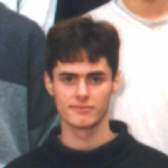 | Nom : Simon Oudin | Surnom : PBO |
| Né(e) le 1er mars 1982 | Lui écrire : | |
| Qualité(s) : l'humour
| Défaut(s) : l'humour | |
| Citation : "La prépa, ça vous gagne !" ou "La vie c'est comme une colle de physique, on sait jamais sur quoi on va tomber !" | ||
| Remarque(s) : PSI*. A intégré l'ENSERG à Grenoble (Concours Communs Polytechniques) | ||
| 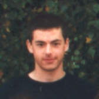 | Nom : Mickaël Parot | Surnom : Zeus |
| Né(e) le 28 novembre 1982 | Lui écrire : parotlet@aol.com | |
| Qualité(s) : bosseur
| Défaut(s) : glandeur | |
| Citation : | ||
| Remarque(s) : 5/2 PSI | ||
| Nom : Sabine Pélissier | Surnom : | |
| Né(e) le 12 janvier 1983 | Lui écrire : sabibine@libertysurf.fr | |
| Qualité(s) : tient bien l'alcool
| Défaut(s) : boit trop | |
| Citation : | ||
| Remarque(s) : MP*. Licence de math à Orléans | ||
| 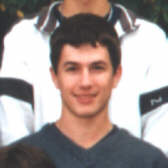 | Nom : Alban Pelloille | Surnom : Potacoq |
| Né(e) le 3 septembre 1982 | Lui écrire : alban.pelloille@libertysurf.fr | |
| Qualité(s) : très bon cascadeur, sportif (vive l'OM!). Déconneur.
| Défaut(s) : se shoote à la morphine | |
| Citation : "Sodomie du soir, repos de la machoire, fellation du matin, repos du vagin, 69 du midi, nettoyage des outils" | ||
|
Remarque(s) : Vive l'OM ! On pschitte la Sup 3 ! PSI. A intégré l'INSA de Toulouse (Concours INSA) | ||
| 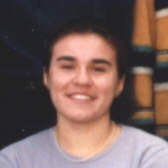 | Nom : Elise Pénon | Surnom : |
| Né(e) le 7 avril 1983 | Lui écrire : bernard.penon@wanadoo.fr | |
| Qualité(s) : bavarde
| Défaut(s) : trop bavarde | |
| Citation : La prépa c'est bien, en Sup 3 c'est mieux | ||
|
Remarque(s) : Vive les vacances ! MP*. Licence de math à Orléans | ||
| 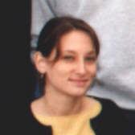 | Nom : Elise Poison | Surnom : |
| Né(e) le 10 septembre 1982 | Lui écrire : poisonhypnotic@caramail.com | |
| Qualité(s) : sportive, peut rentrer en 315 n'importe quand... contrairement à certains. | Défaut(s) : imposante | |
| Citation : | ||
| Remarque(s) : PSI. A intégré le CUST à Clermont Ferrand (Concours e3a, Réseau Eiffel) | ||
 | Nom : Cécile Pressiat | Surnom : C6Leuh ! |
| Né(e) le 22 juin 1982 | Lui écrire : 222s_cocotte@caramail.com | |
| Qualité(s) : est une 222's cocotte
| Défaut(s) : j'ai une ponctuation bien à moi : "Psychologiquement parlant, hyper critique, ben voilà quoi !! ..." | |
| Citation : Si l'envie de travailler te prends, assieds toi et attends qu'elle passe | ||
|
Remarque(s) : Vive la SUP 3 et les vendredis soirs ! 5/2 MP* | ||
| Nom : Anthony Roux | Surnom : Monsieur Roux | |
| Né(e) le 15 août 1982 | Lui écrire : | |
|
Qualité(s) :
| Défaut(s) : | |
| Citation : | ||
| Remarque(s) : MP*. A intégré Sup Aéro à Toulouse (Concours commun Mines-Ponts) | ||
| 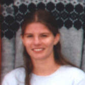 | Nom : Emilie Samain | Surnom : Gnomette |
| Né(e) le 13 mai 1982 | Lui écrire : thegnomette@caramail.com | |
| Qualité(s) : répond parfois au sondage
| Défaut(s) : met 15 ans à répondre aux sondages et ne réponds pas à tous | |
| Citation : | ||
| Remarque(s) : MP2. A intégré Centrale Nantes (Concours Centrale) | ||
| 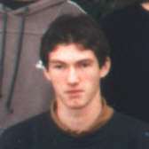 | Nom : Sylvain Terrier | Surnom : PP |
| Né(e) le 10 décembre 1981 | Lui écrire : | |
|
Qualité(s) : ordonné
| Défaut(s) : fait aucun excès | |
| Citation : "Quatre fois sept, ça fait 21" Mme Gouchet. " Il est 11h51. Encore quatre minutes jusqu'à midi" Toujours Mme Gouchet | ||
|
Remarque(s) : Proposer une association "HX3 - Shannon" (échange pub sur le site contre girafes) MP1. A intégré l'ISFA (Institut des Sciences Financieres et d'Assurance) à Lyon (Concours propre) | ||
| Nom : Ludovic Thauvin | Surnom : Ludo | |
| Né(e) le 21 avril 1983 | Lui écrire : ludic@netcourrier.com | |
| Qualité(s) : patient
| Défaut(s) : feignant | |
| Citation : "Pourquoi faire aujourd'hui ce que tu peux faire demain ?" | ||
| Remarque(s) : PSI. A intégré l'ENSEIRB à Bordeaux (Concours Communs Polytechniques) | ||
 | Nom : Pascal Virmaud | Surnom : Turbo |
| Né(e) le 25 décembre 1982 | Lui écrire : NewZorglub@caramail.com | |
| Qualité(s) : aime encore plus les vacances
| Défaut(s) : aime les maths | |
| Citation : seul le Sup3 spirit peut te permettre de traverser les épreuves destructrices de la vie. | ||
|
Remarque(s) : j'aime bien faire la fête avec les Sup3 (notamment les HX3 208 !) et profiter des vacances. MP*. A intégré l'ENST Bretagne à Rennes et Brest (Concours Commun Mines-Ponts) | ||